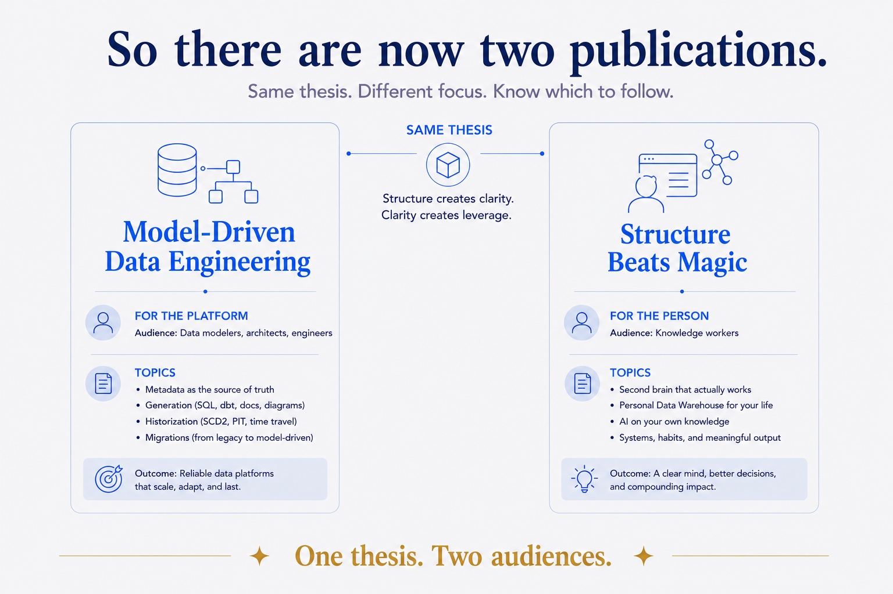
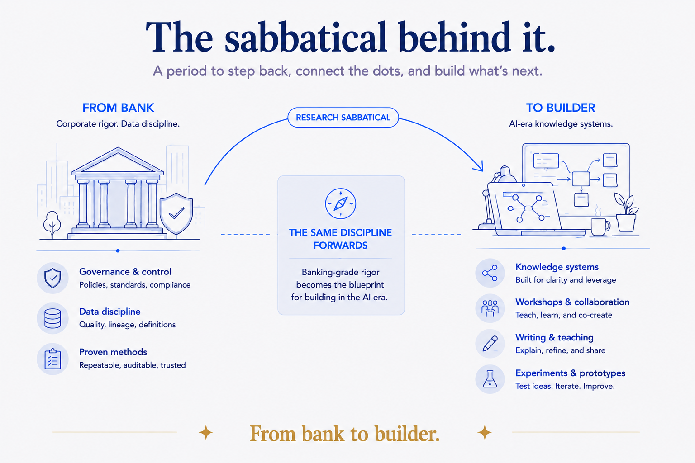

A quick, honest heads-up
If you've followed my writing, it's leaned toward the engineering side of data — patterns, metadata, generation, historization, migrations. I'm not leaving any of that. But engineering was never the part I loved most, and I want to write more openly from the part that is.
So this is a note to say two things: my writing is broadening, and it's going to lean harder into the thing underneath all of it — modeling.
The thing underneath: modeling, not just engineering
My core skill isn't building pipelines. It's data modeling — finding the real building blocks of something, structuring and linking them, and drawing the picture that makes a complex system clear for everyone in the room. Engineering makes a model run; modeling is the part I love — seeing the essence, designing the smart system, making it legible to the business and the engineers alike.
Here's the realization that widened everything: your own knowledge can be modeled the exact same way as an enterprise's data. The building blocks (entities, or atomic notes), the layered structure (raw → integrated → delivered), the open, self-describing pieces, the validation that keeps it honest — it's one craft at two scales. I got so into this that it grew its own article: The Vault Is the Data Model, on how a folder of markdown files becomes a real, queryable, AI-ready data model. If the idea grabs you, start there.
That's why my writing is broadening — from "how to model and build a data platform" to "how to structure knowledge and apply it with the current AI stack," at every scale from a single person to an organization. Same skill. Same essence. Two sizes.
So there are now two publications
To keep that clear rather than muddled, I've split it into two Medium publications. One thesis, two audiences.
Model-Driven Data Engineering — the modeling-and-building craft for data platforms. Data modeling first, then the engineering that makes models run: metadata, generation, historization, migrations, and the diagrams that make all of it clear to a team. For data modelers, architects, engineers, and technical leads. If you followed me for the deep modeling and SQL-generation work, this is where it continues.
Structure Beats Magic — the same modeling instinct, one scale wider. How to give your own knowledge and data a structure that works — a second brain, a personal data warehouse, systems that hold together — so AI can genuinely help instead of guessing. For knowledge workers and anyone trying to make AI useful on their real information. This is the newer, more exploratory one, and where a lot of my current energy is.
The dividing line is simple: Model-Driven Data Engineering is for the platform; Structure Beats Magic is for the person. Both rest on the same conviction — that the results come from the structure you give things, not from the tools themselves. Follow one, follow both; they won't repeat each other.

The sabbatical behind it
The honest reason I have room to do this: I'm on a research sabbatical.
After a long run of corporate and consulting work in banking, I stepped back in mid-2026 to do something deliberate — not just rest (though there's been some of that), but a real reorientation. Part decompressing, part travel, but a large part research: using my own life and work as a laboratory for exactly these questions — personal knowledge systems, AI workflows, the discipline of structure applied where I can move fast and test things honestly.
I've started calling the direction "from bank to builder." Twenty-five years of banking-grade rigor about data — the modeling discipline, the governance, the "be in control and stay in control" habit — turns out to be the blueprint for building AI-era knowledge systems, first for myself and then for others. The sabbatical is where I get to build that in the open and write down what actually works.

What this means for you
Not much you need to do — this is a heads-up, not a fork in the road.
- If you're here for the modeling and data-engineering craft, nothing changes: follow Model-Driven Data Engineering.
- If the idea of structuring your own knowledge for AI interests you — a second brain that actually works, your data made queryable, AI that acts on your real information — take a look at Structure Beats Magic. There's a run of new pieces landing over the coming weeks.
- If you want both scales of the same idea, follow both. That's the whole point: one skill, told at two sizes.
Thank you for reading this far, and for following the work. The craft continues; the lens just got wider.
— Jaco